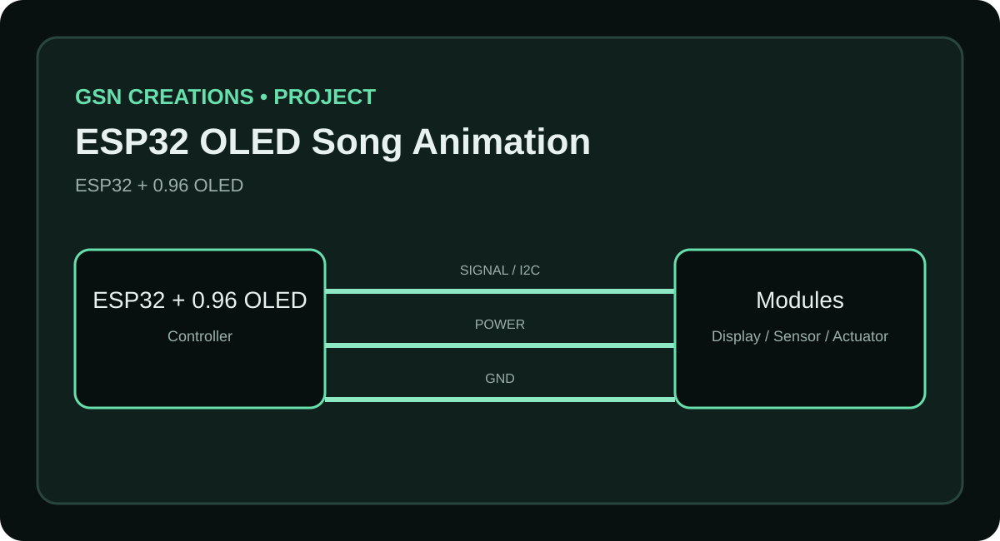
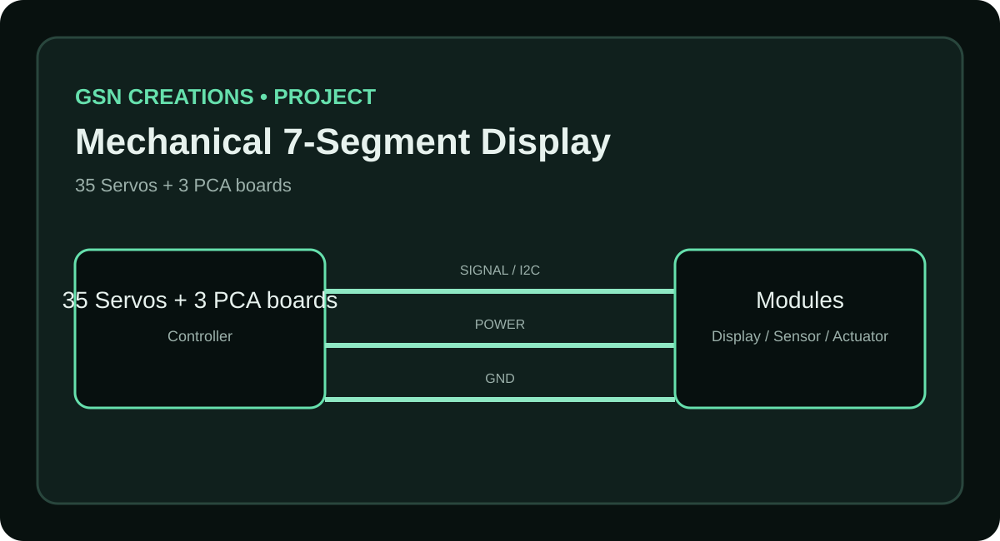
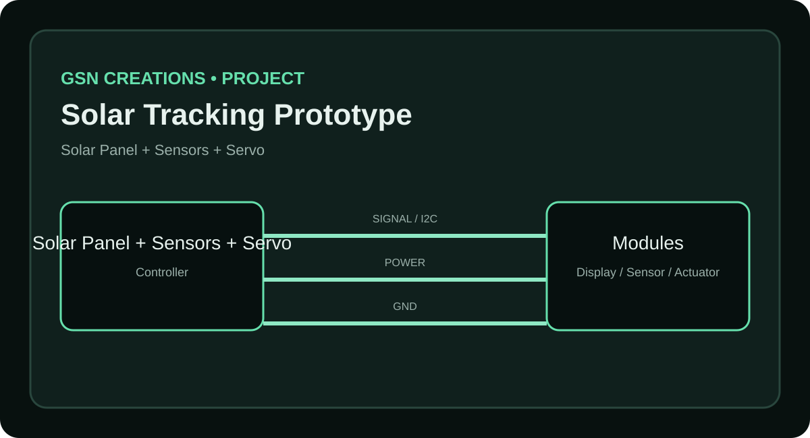

ESP32 OLED Song Animation
Convert a video into 128×64 monochrome animation frames and play them on a 0.96-inch SSD1306 OLED using ESP32.
View full project →Each project includes a project image, connection diagram, used components, working process, scope and a downloadable project ZIP.

Convert a video into 128×64 monochrome animation frames and play them on a 0.96-inch SSD1306 OLED using ESP32.
View full project →
A compact educational fire-alert prototype using Arduino, flame sensor, buzzer and SSD1306 OLED.
View full project →
A small monochrome OLED game using ESP32, a 0.96-inch SSD1306 display and a button input.
View full project →
Display an MQ-series sensor reading and detector status on a compact OLED interface.
View full project →
A five-digit mechanical display using 35 servos, with seven servo-controlled segments per digit.
View full project →
A cardboard-friendly solar tracking prototype that turns a panel toward stronger light.
View full project →